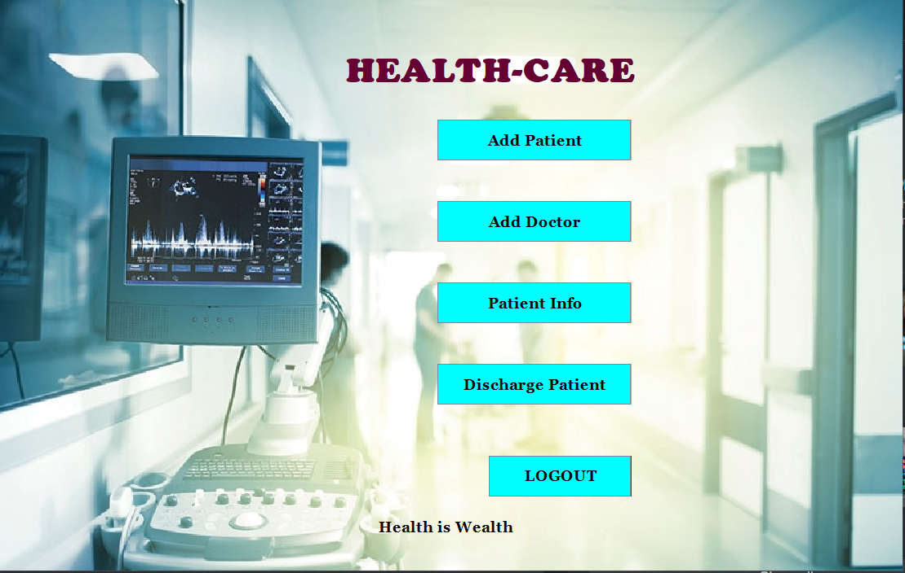
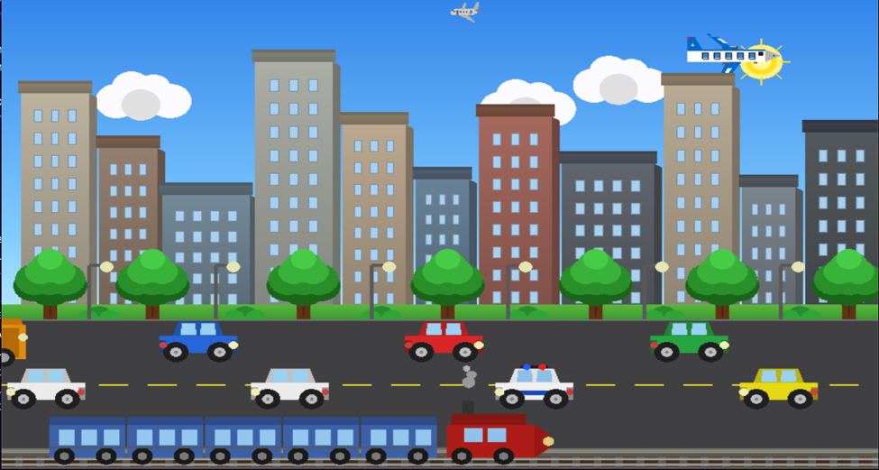
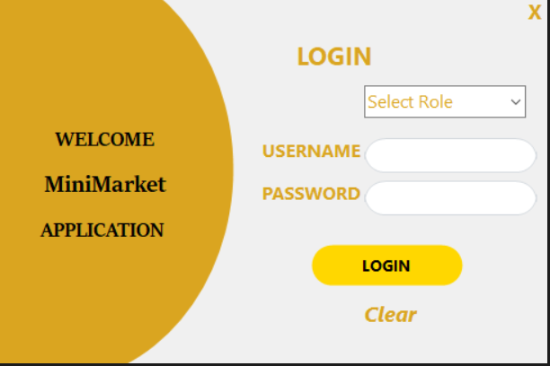

A simple Health Care Management System developed in Java. The project helps manage hospital-related information such as patients and doctors. Users can add, view, and update information easily through the system. It was developed as an academic project to learn Java programming and application development.

This is a computer graphics project developed using C++ and OpenGL. The project shows a smart city environment with different weather and time conditions such as day, night, rain, sunset, and foggy weather. It also includes moving vehicles, trains, airplanes, buildings, trees, and street lights to create a realistic city view.

A Mini-Mart Management System developed using C#. The application helps manage products, sales, and user information. SIt provides an easy way to keep records and organize daily store operations.